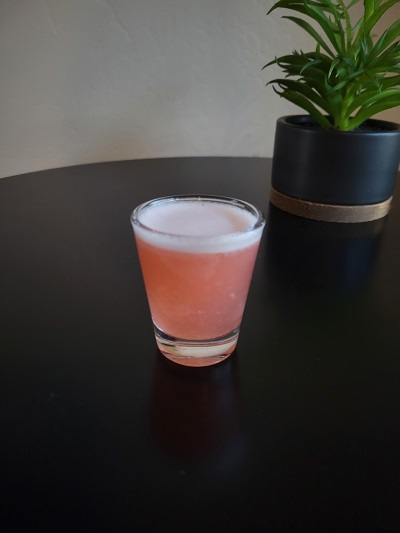

Description
Great shot which is fruity and sweeet with very little alcohol flavor and will get you messed up fast.
Ingredients (makes 4 shots)
- 2 oz - Tito's Vodka
- 2 oz - Gin
- 2 oz - Malibu Coconut Rum
- 2 oz - Peach Schnapps
- 6 oz - Cranberry Juice
- 6 oz - Pineapple Juice
Directions
- Mix all ingredients in a shaker.
- Shake hard for 20 sec.
- Strain into 4 shot glasses.
Return to Top
Return to Main